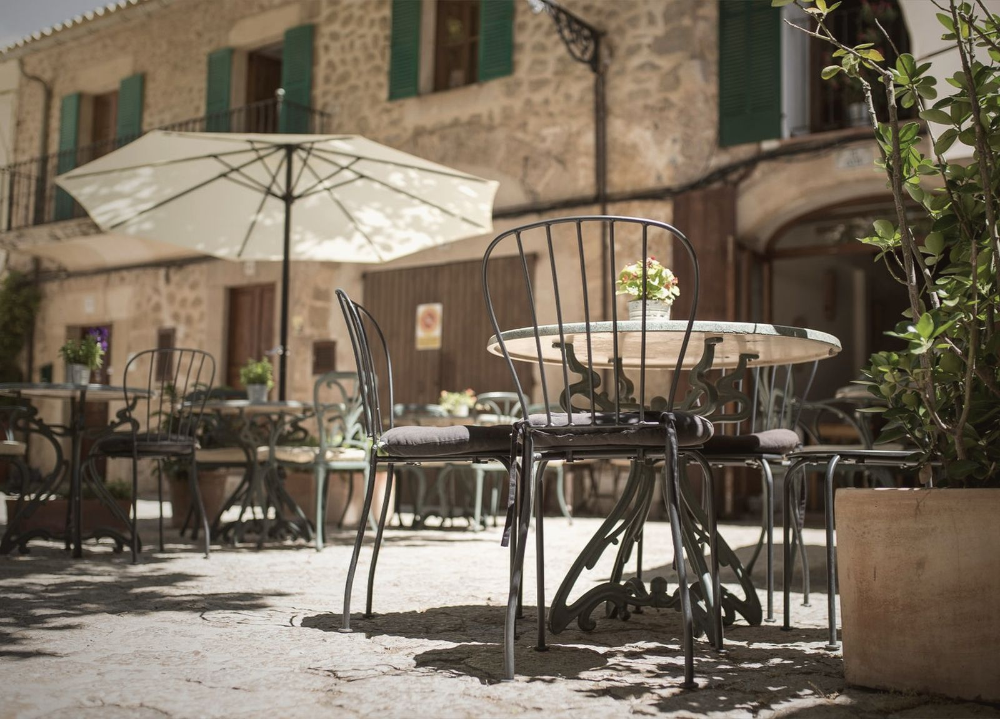

01 · Mañana
Café y desayunos
Café, desayunos, tostadas y bollería.
De lunes a viernes, desde las 8:30. Sábado y domingo abrimos por la tarde, a las 16:00.
| Lunes a viernes | desde las 8:30 |
|---|---|
| Sábado y domingo | cerrado por la mañana |
Ronda del Pilar, 6 · Zafra De lunes a viernes desde las 8:30
Un día en Nizabel
Abrimos temprano para el café y cerramos tarde con la copa. En medio, la tarde.
01 · Mañana
Café, desayunos, tostadas y bollería.
De lunes a viernes, desde las 8:30. Sábado y domingo abrimos por la tarde, a las 16:00.
| Lunes a viernes | desde las 8:30 |
|---|---|
| Sábado y domingo | cerrado por la mañana |
02 · Tarde
Cañas y tapas, dentro o en la terraza.
Todos los días. Entre semana seguimos desde la mañana; sábado y domingo abrimos a las 16:00.
| Lunes a viernes | toda la tarde |
|---|---|
| Sábado y domingo | desde las 16:00 |
03 · Noche
Copas con los amigos, dentro o fuera, hasta el cierre.
Hasta la 1:00 de lunes a jueves, hasta las 2:00 viernes y sábado, y hasta medianoche el domingo.
| Lunes a jueves | hasta la 1:00 |
|---|---|
| Viernes y sábado | hasta las 2:00 |
| Domingo | hasta medianoche |

Fuera
Mesas en la acera de la Ronda del Pilar, bajo el toldo y las sombrillas. Para el café de media mañana, la caña de la tarde o la última de la noche.
Con sol, a la sombra del toldo. Por la noche, con la calle ya tranquila.
Lo que dicen en Google
«Es un bar muy bueno para ir a desayunar o a tomar una copa con los amigos el personal es muy amable y las tostadas son baratas y buenas»
Pili · en Google
«El mejor sitio, para tomar algo, solo o con amigos, gente muy agradable para pasar la tarde y la mañana o la noche, lo recomiendo, yo voy casi todos los días.»
Francisco · en Google
«Buen trato, sitio ideal y céntrico para desayunar, cervezas y copas.»
Carlos · en Google
Visita
Consulta el horario de la semana
| Lunes | 8:30 – 1:00 |
|---|---|
| Martes | 8:30 – 1:00 |
| Miércoles | 8:30 – 1:00 |
| Jueves | 8:30 – 1:00 |
| Viernes | 8:30 – 2:00 |
| Sábado | 16:00 – 2:00 |
| Domingo | 16:00 – 24:00 |